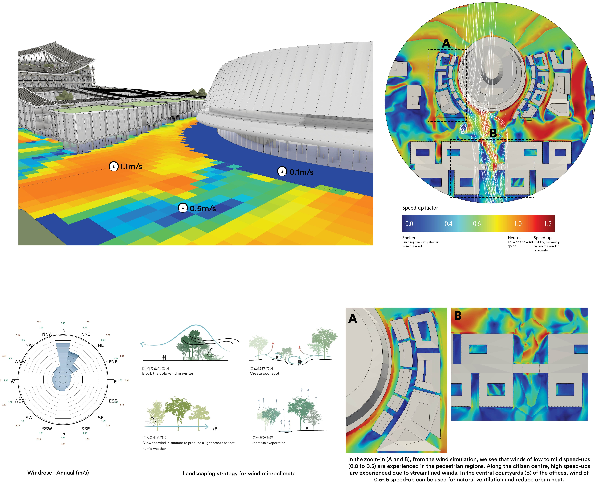
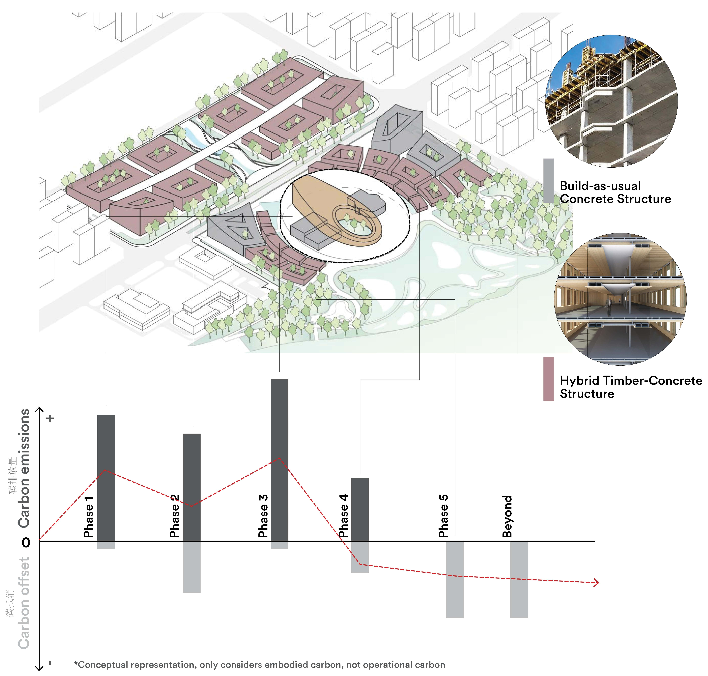
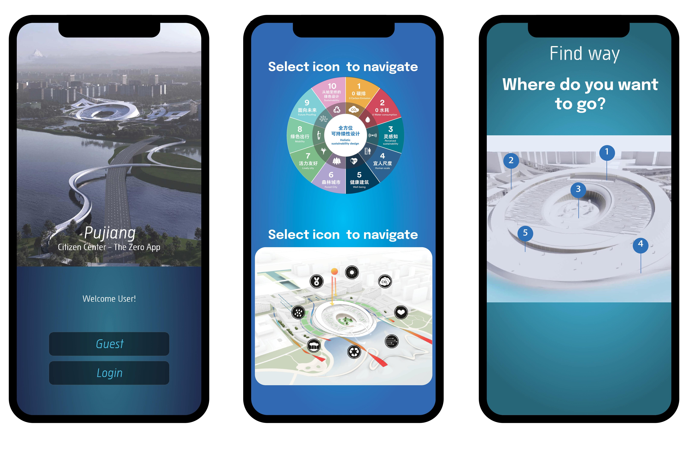
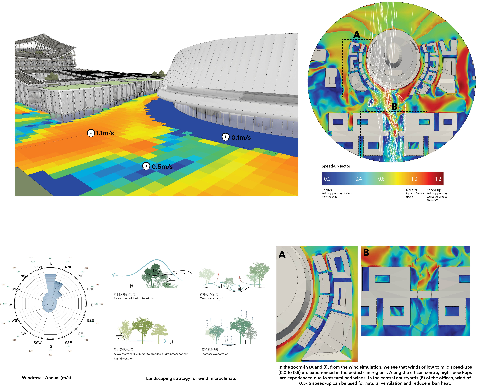
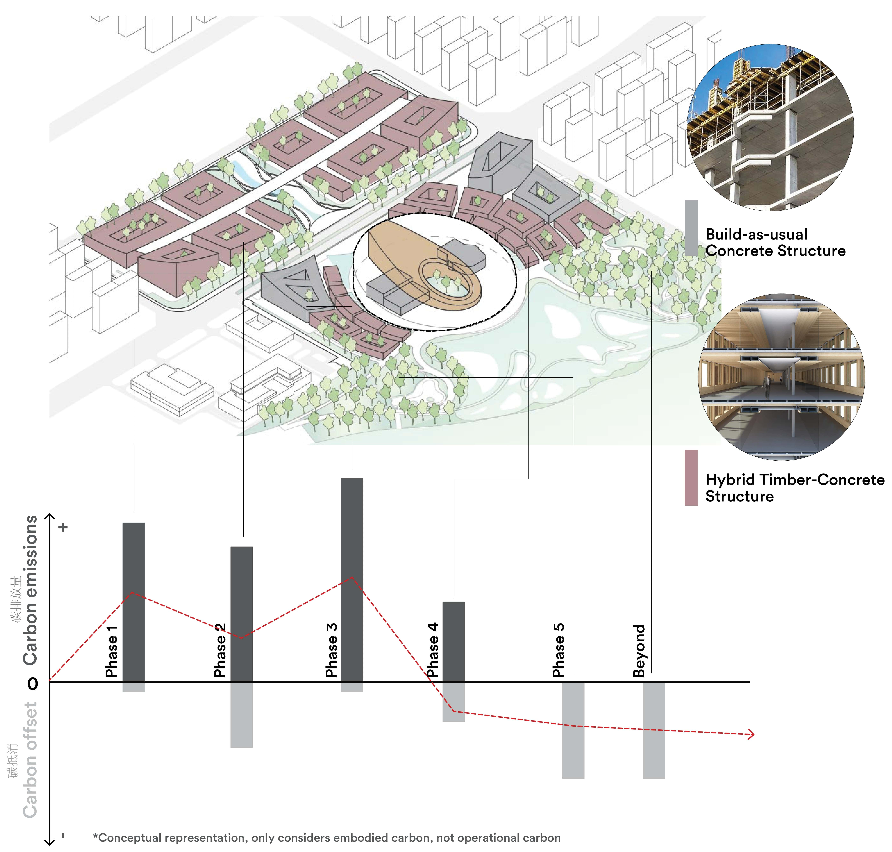
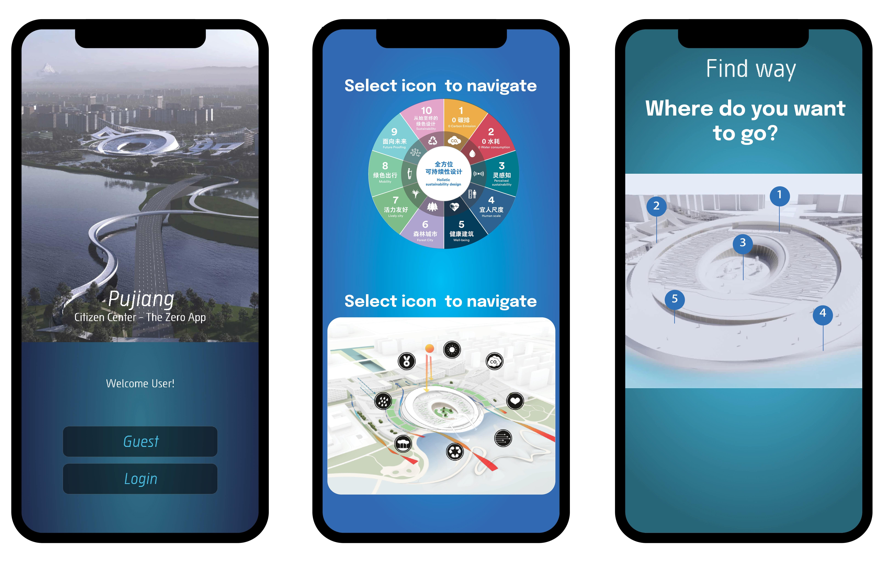
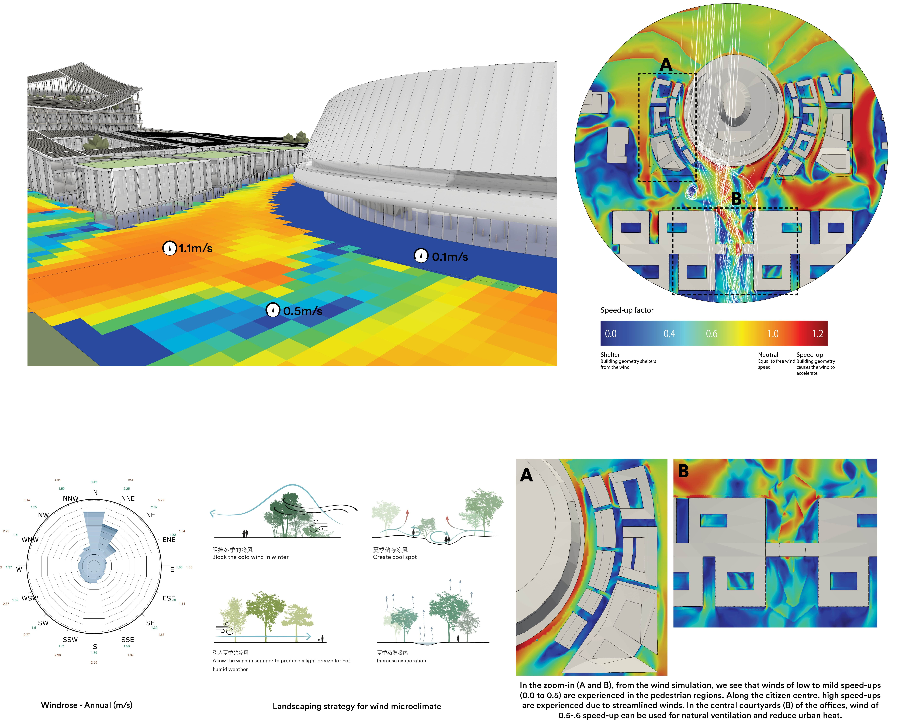
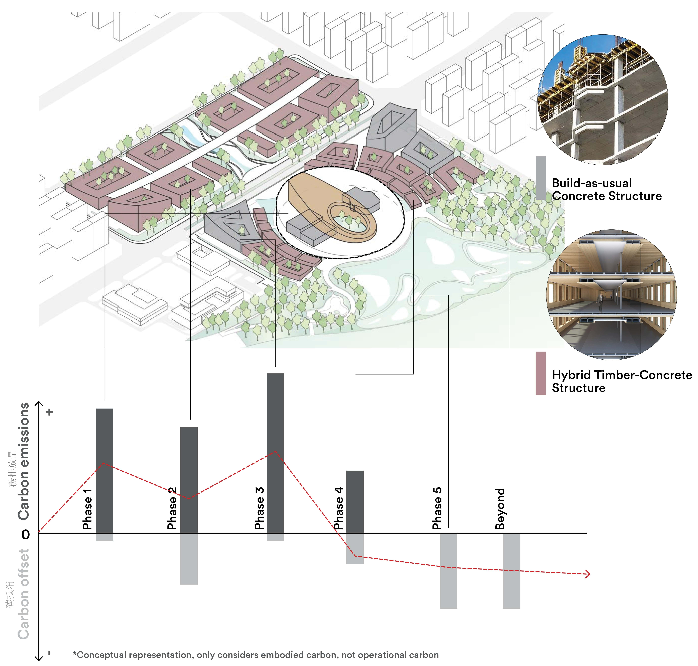
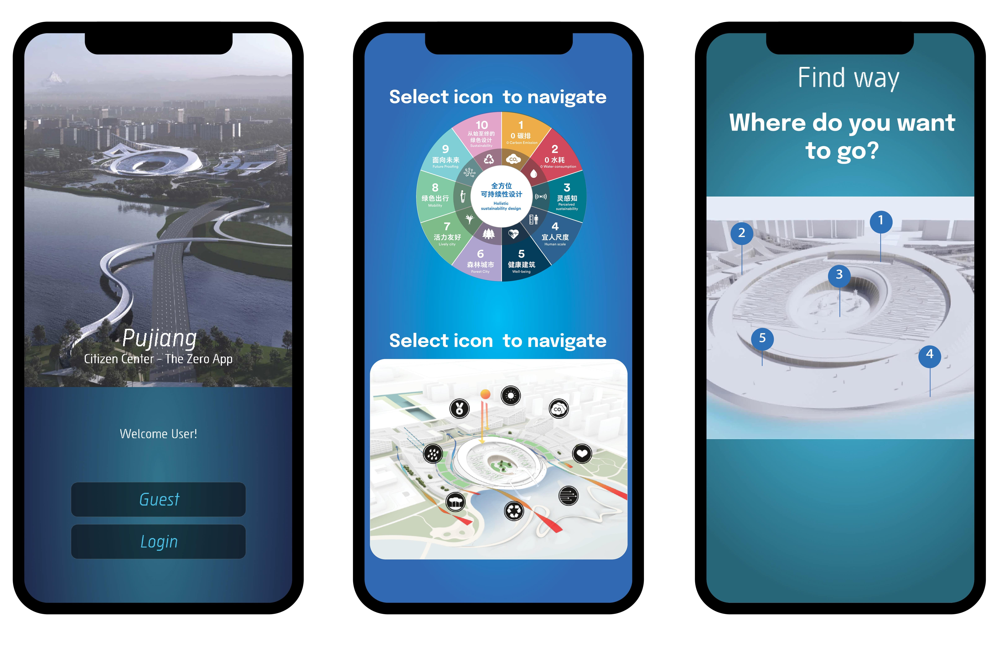

As part of my employment at Henning Larsen Architects as a Ssuatinability Engineer, I helped on this
prestigious competition in China. The campus has been designed with three sustainability agendas: Zero
Carbon Emissions, Zero Water Exploitation and Circular City.
A four step strategy was develoiped as a roadmap for the client to reach Net Zero, that included passive
and active systems, sustainable and low embodied carbon materials and digital sustainability that
boosted circular living patterns after occupancy. A few of them have been explained below.
Passive Systems: Designing with microclimate was one of the key design elements. By raising up the
volumes towards the South, and keep northern buildings low, the geometry allows for shading with
controlled solar exposure yet indirect sunlight. In order to prevent turbulance by northern winds, we
open up the masterplan towards north and streamline the winds through corridors along the pedestrian
pathways.
The building volume has been strategically designed to minimize excessive solar heating, by adopting a
circular form. The doubly curved envelope allows natural light through glazing in the shaded Southern
setbacks, and also through glazing in the central courtyards towards the North.
Throughout the masterplan, we see that the temperature ranges by almost 7°C. Therefore, we create
‘pockets of comfort,’ which also define the hierarchy of activities.
Low embodied carbon materials: From structure to envelope to the interior cladding, we propose low
embodied carbon materials. For example, for the structure, we use a hierarchy of concrete and hybrid
structure, based on functionality and buildability. For envelope, we propose Ultra high performance
concrete, which has excellent performance while low embodied carbon (EC), as compared to normal
concrete. For interior cladding, we propose timber cladding, that not only has low EC value, but also
acts as a sink.
Digital Sustainability: The Zero App shall be built for both the residents and also the visitors to the
Pujiang Citizen Centre. It aims to drive post-occupancy sustainable user behavior within the project.
The app shall provide incentives for sustainable behaviors that helps lower energy consumption and
allowing consumer circular value chain, while ensuring user comfort through environment control.
Sustainability Strategy for Pujiang Citizen Centre
Work as part of employment at Henning Larsen Architects
Link
Role: Contributed towards sustainability strategy development, building design based on microclimate studies and life cycle assessment
Underlying Principles:
Net Zero Campus
Microclimate Enhancement
Water & Biodiversity Rehabilitation


